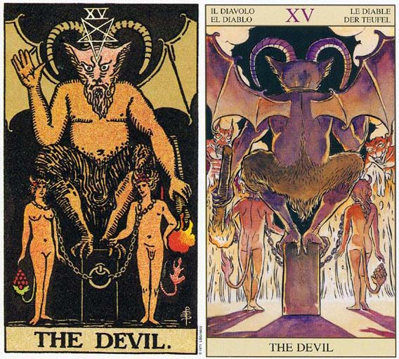

塔罗牌魔鬼（The Devil）解释
相关语：诱惑 对应星象：土星
恶魔 THE DEVIL 代表野心支配了心灵，代表错以为别无选择。沉迷物质享受，缺乏心灵支柱。 逆位的代表在寻找打破束缚的方法找寻新出路
魔鬼牌代表一种错误的概念，认为事情别无选择。觉得“我所拥有的就是这些”或“这是我唯一的选择”。在宗教的前因后果当中，魔鬼引诱男人使它遗忘掉精神的探索，以及他的神圣目的。当男人看不见他真正的目的时，生活所提供给他的欢乐就会具有意义，因为“你只能活一次”。
魔鬼代表否定生命有任何精神上的目的，这使得追求有形事物及自私目标之门大开。如此狭隘的事业通常会带来悲惨，而最终便是绝望，因为即使你能妥善掌控自己，以及周遭的人，你还是会在人生将结束的那几年或几个月内，对你所努力经营出来的世界失去控制的能力。当你的肉体生命结束时，这些物质和目标又有什么重要性可言呢？
魔鬼表示控制——企图控制生命、伴侣、家人或同事。在这张牌中，与恋人牌上曾出现过的伴侣，现在被锁一起了，魔鬼拿着一个点燃的火把煽动这男人的欲望，让他的动物本能支配其心灵。事实上，它们可以解放自己、让自己自由，因为套在他们头上的链子很松，可以自行解套，然而魔鬼的魔力使他们误以为逃脱是不可能的——因为别无选择。
如果你是身体被捆绑，别人可以看到那个节，或许还可以帮你松绑。但是如果你是精神上受到束缚，他们可能注意不到，即使他们观察到了，还得先找出事件的缘由，才能帮助你得到自由。要让某人从他局限的信念中解放出来，比让他的身体得到自由，要复杂多了，因为信念是看不见的。只有他们所产生的后果，才能证明它们的存在。
魔鬼头上的五角星星，是指人身体的五个部位。这个行星正立时，它代表头、伸展的双臂及双腿，象征理智控制了热情。而倒立的星星则暗示热情支配了理智。或许你的热情正蒙蔽了你的判断。
魔鬼可以表示，你不愿意为你自己与你的行为负责。当你因为自己缺乏机会或有限的选择性而责备他人时，此牌就会出现；或你将他人视为有限机会中的竞争对手时。这些限制存在于你的心中，而且事实脱节。相信他们可能会成为你支持种族主义、性别主义或其他任何形式歧视的正当借口，由于别人“分走了你的一杯羹”（指机会），所以他们统统受责备。
魔鬼牌代表占星学中魔羯座。其他代表魔羯座的牌是五角星的骑士，而象征意义比较不那么明显的，则是五角星的其他宫廷牌。魔羯座者的部分课题是，超越物质世界，并接受你确实拥有一个精神目的。否认这个目的，将会限制你这辈子的选择和机会。
当你已理解这部分的课题，并将自己从物质世界中解放出来，第二部分的课题就是回到日常生活幽深黑暗的世界中，去帮助那些依然被囚禁的人。它代表一种觉醒，即只要还有一个人迷失，或受困于黑暗中，我们全都会感觉到，并为他分担。我们获得的认知是，我们身上流着相同的血液，而且都朝向相同的目的前进。
魔鬼（The Devil）牌面解释
牌面中，恶魔看着被铁链束缚的奴隶，发出得意的狞笑。尽管奴隶们被铁链捆着，但只要他们互相帮助就可以摆脱恶魔，但他们已经被恶魔的诱惑蒙住了双眼，心甘情愿被其驱使，仔细看他们已经长出了和恶魔一样的犄角和尾巴。
狰狞可怕的恶魔却有着如此动听的声音，他用金钱和所谓的安全引诱人们成为他的奴隶。人们在他的控制下失去了互相沟通的能力，占据心灵的完全是赤裸裸的原始欲望。为了追求金钱，否认生命中其它任何目标，人都变得自私和贪婪，可当生命结束时，这些物质就不再具有任何意义了。
恶魔代表一种错误的观念——拥有物质财富就拥有了一切。外在的干扰让人的冲动支配着理智，自我的精神上的要求不断消失，开始不愿意为自己的行为负责，因为他们可以把一切过错都推给恶魔。这也可以看作是事业的成功，因为你的最终目标就是金钱。
魔鬼（The Devil）正位解释
被束缚、堕落、生病、恶意、屈服、欲望的俘虏、不可抗拒的诱惑、颓废的生活、举债度日、不可告人的秘密、私密恋情
当牌面正立时，你将在事业中得到相当大的名声与财富，你心中的事业就是一切，财富就是你的目标。感情上你们开始被彼此束缚，却不希望改善这种关系，情愿忍受彼此的牵连和不满。
魔鬼（The Devil）逆位解释
逃离拘束、解除困扰、治愈病痛、告别过去、暂停、别离、拒绝诱惑、舍弃私欲、别离时刻、爱恨交加的恋情
当牌面倒立时，事业上理性开始支配欲望，找到真正值得努力的目标。感情上开始尝试与对方进行沟通，这让你俩的感情更加牢固。
大体上的意义
在一般性的占卜中，魔鬼代表一种控制生命的需求。你对与自己的可能性缺乏完整的关照。这张牌表示在你对生命充满窒碍或无力感，因而渴望对自己及周遭的人有更严密的控制。
魔鬼牌描述的是一种对生命物质化的观点，或像王尔德（Oscar Wilde）所说的：“知道所有东西的价格，却不知道任何东西的价值。”它可能暗示在某种状况内受到限制，却不愿意去改变。它是一种“偷鸡摸狗胜过杀人放火”的态度。
在健康的分析上，魔鬼代表膝盖、牙齿方面的问题，或指皮肤过敏。
在事业的分析上，魔鬼可能象征着控制，或并吞的野心。它是一张代表事业成功的牌，因为他将大多数的注意力都放在最后的结果——金钱。
倒立的魔鬼
倒立的魔鬼意味一种打破限制你自由之链的企图，不论它是肉体上或精神上的不自由。现在你正积极的找寻改变或新的选择，你不再指打算接受目前的状况了。
在你有能力去打破你的限制之前，你需要对它们先进行了解。这份觉醒可能比较继续忽略下去还要来的痛苦，然而它却是一个必要的阶段，因为若没有经历过这份伤害，你可能就没有办法再变得完整了。
魔鬼牌倒立可代表捐弃控制生命的需求，并接受自己的黑暗面。如此一来，你便可以将用在压抑你内在需求与欲望的精力给要回来，然后把它用在更具价值的目的。
魔鬼牌倒立显示出尝试性的走向自由，做出选择。它可说是挑战你周遭的人，或你人生信仰的行动。五角星星又再度正立了，因此你可以把你的理性力量用于你的欲望之上。
两性关系上的意义
在两性关系分析中，魔鬼可能是描述一份由爱开始的两性关系，结果却变成一种束缚。习惯、公式化和实际性，已经奴役了关系中人的心。它也可能象征你被欲望或惯性所支配，而非依循你更佳的判断行事。
这张牌意味接受一种坏的状态，对于那些役使你的事物不作丝毫的抵抗，或甚至不愿意做改变。它暗示你紧守着“反正还有许多人的情况比我更糟”的信念。通常这是真的，然而这只是你恋战于某种状态的藉口，无法提供你任何学习、成长或快乐的机会。
有时候魔鬼牌是指一段建立在嫉妒或强烈控制欲之上的两性关系。它可能意味着纵欲，或只是为了性爱的理由而维系一段关系，换句话说，你已经不喜欢你的伴侣，性和感情或你内在的自我无关，你也无所谓。